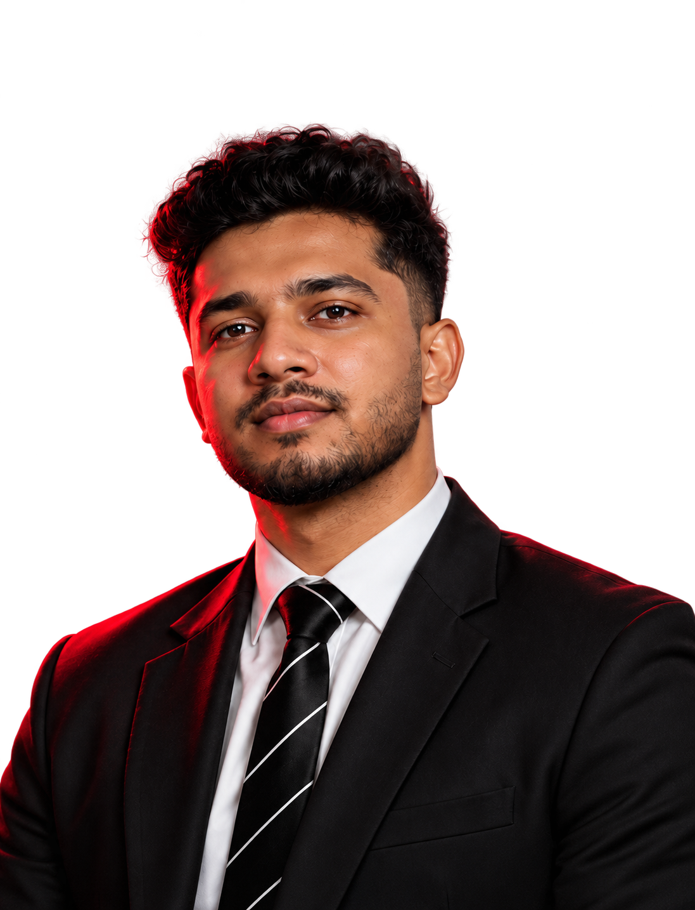

MOHAMMED ROSHAN E S
DUBAI, UAE · DIGITAL MARKETER
Creative thinking.
Measurable impact.
Brands that connect.
PERFORMANCE
MARKETER
I turn audience insights into compelling campaigns. Blending paid media, creative direction, and brand strategy to connect people with brands.
CREATIVE EYE.
PERFORMANCE
MINDSET.
Good marketing connects
the story with the strategy.
I’m Mohammed Roshan E S, a digital marketing manager based in Dubai. I bring audience insight, paid media, and creative direction together to build campaigns with purpose.
From visual production in Kerala to agency campaigns and restaurant marketing in Doha, I work across the full journey: the first impression, the next click, and the customer connection.
Explore my experience ↗LESS TALK.
MORE WORK.
Restaurant stories, social campaigns, and brand-led creative. A selection of work from Al Rayyan Restaurant Management and Cntrl M.
Showing 12 work images
BUILT TO
CONNECT.
From the first impression to the next action, I bring the pieces together.
01Performance marketing
Full-funnel paid campaigns, audience targeting, and performance reviews across Meta and Google. Campaign decisions grounded in data and business goals.
02Brand & content strategy
Distinct brand positioning, practical content calendars, and regional campaigns. Experience across F&B, restaurant launches, franchise marketing, and social storytelling.
03Creative direction
Connecting the creative brief to the final asset: food photography, brand-aligned shoots, video production, and creative reviews. A production background that keeps execution in focus.
04People & partnerships
Bringing clients, creative teams, kitchen teams, and creators around the same plan. Experience managing influencer and celebrity collaborations and leading strategy discussions.
THE JOURNEY
SO FAR.
Al Rayyan Restaurant Management
Digital Marketing Manager · Doha, Qatar
Campaigns & production
- Started in January 2025, managing digital marketing across eight restaurant brands, from quick-service dining to fine dining.
- Planned platform-specific content for Instagram, Talabat, Snoonu, and Rafeeq, including launches, festivals, and seasonal promotions.
- Managed Meta Ads and reviewed creative assets for brand consistency; coordinated food shoots, content calendars, and influencer or blogger collaborations.
Cntrl M
Digital Marketing Manager & Team Lead · Kerala, India
Creative Director · Fashion & lifestyle
Creative direction & performance
- Led creative direction for fashion-brand projects, aligning campaign concepts and visual identity with brand positioning and target audiences.
- Developed mood boards, visual references, and social-first content; guided styling direction, content selection, and creative consistency.
- Collaborated with photographers, videographers, designers, models, and creative partners from brief through production.
- Executed full-funnel Meta and Google Ads campaigns, led client discussions, and managed influencer and celebrity collaborations, using performance reviews to improve creative and media.
Bluepin Digital
Social Media Marketer · Kochi, India
Regional campaigns & content
- Planned brand-awareness campaigns and regional marketing strategies supporting brands and franchise growth.
- Produced video and digital assets for web and social platforms; managed Meta and Google Ads targeting GCC audiences.
Lustro Wedding Stories
DOP Manager · Thrissur, India
Director of Photography (DOP)
Visual production
- Directed camera work, lighting, framing, and visual treatment for a consistent cinematic look.
- Coordinated clients, shoot schedules, and on-set teams; reviewed edits and colour grading through final asset delivery.
SALT
Creative Direction & Content Production
Creative planning & delivery
- Developed brand-aligned creative concepts and visual references for social-first content and campaign execution.
- Supported planning and production coordination from the initial brief through content review and final asset delivery.
- Aligned visual storytelling, product presentation, and digital content with brand identity and marketing objectives.
Education
Advanced Diploma in Digital Marketing and Communication
Digital X Marketers Academy, Kerala
Bachelor of Commerce
University of Calicut, Kerala
Certifications & training
HubSpot SEO, Advanced SEO & Digital Marketing
Semrush SEO Toolkit & Content Marketing
Google Analytics training & Google Search Skill Kit
Certification details
- HubSpot: SEO Certified, Advanced SEO, and Digital Marketing Certified.
- Semrush: SEO Toolkit and Content Marketing with Eric Enge.
- Google: Analytics for Beginners, Analytics Power Users, Advanced Google Analytics, and Google Search Skill Kit.
Creative & performance expertise
Four years of experience connecting performance marketing, brand strategy, creative direction, and visual storytelling, from brief through execution and review.
Tools & platforms
Meta Ads Manager & Business Suite · Google Ads · LinkedIn Ads · GA4 · SEO tools · HubSpot · Mailchimp · CRM & lead funnels · Reporting & performance tracking
Languages
English · Malayalam · Hindi · Arabic
LET’S MAKE
AN IMPACT. ↗
Looking for a Performance Marketing Manager
or Digital Marketing Manager? Let’s connect.